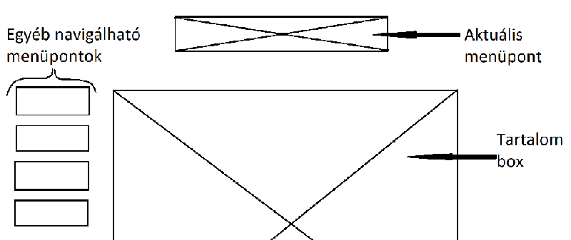
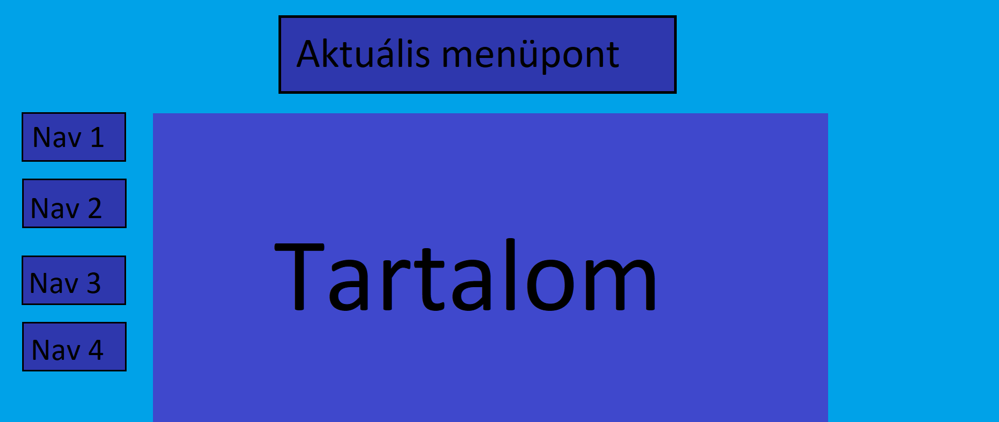
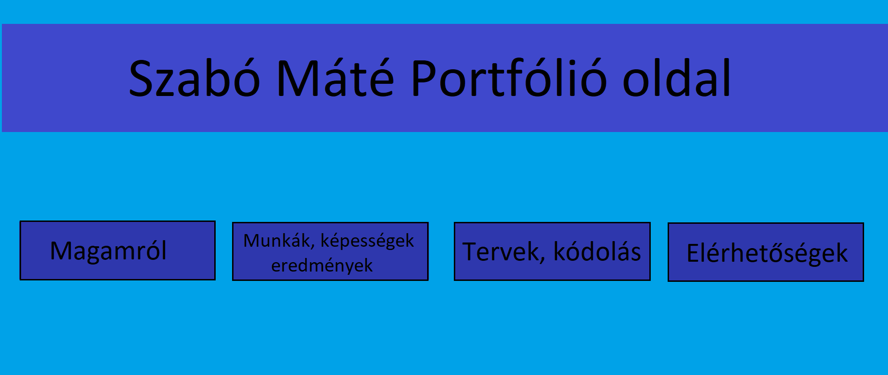

Elrendezési Tervek
Grafikai Tervek
|  |  |
Nehézségek
A grafikában nem vagyok jártas, ezért az oldal kinézete hagy maga után bőven kivetni valót. A kódolás egyéni elsajátítása nem volt egyszerű.
Kódolási Nehézségek
Bár a tervemen az látszik, hogy a tartalom felett megjelenik az aktuális menüpont és ennek megoldásával nagyon sokat kellett próbálkoznom, mire találtam egy nem éppen szép megoldást ennek kivitelezésére.
Változtatások
Az egyedüli nagyobb változtatás az aktuális menüpont kivitelezése. Illetve a grafikai terveknél látszik, hogy gondolkodtam azon, hogy a navigációra szolgáló részt egy sorba írom, de végül a másik megoldás mellett döntöttem.
Felhasznált oldalak:
- MS. Paint
- w3schools.com